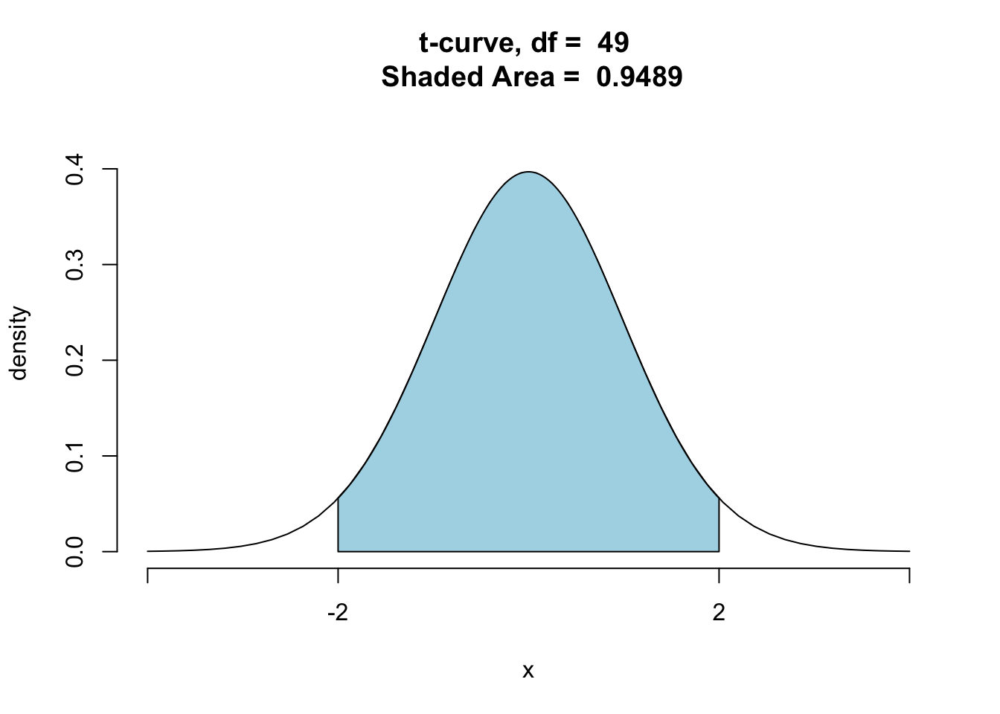
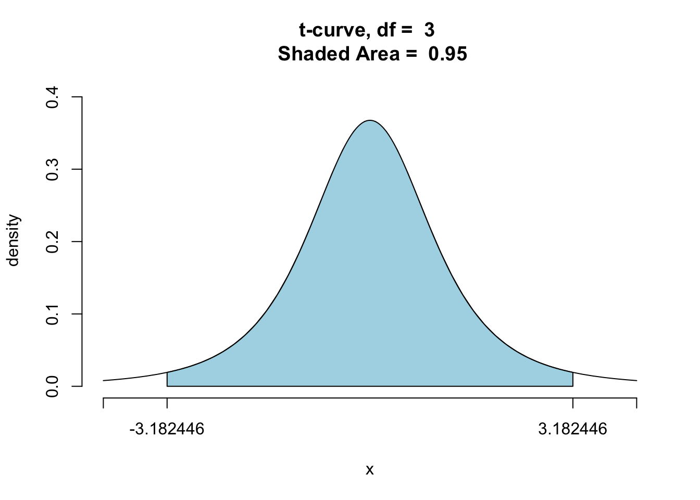
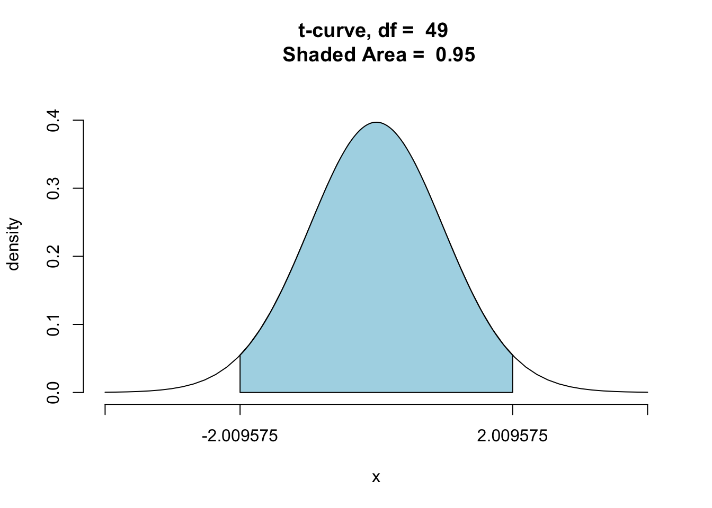

Chapter 9 Confidence Intervals
9.1 Introduction
Let’s begin by going over what we have learned recently.
One of the primary goals in statistics is inference — the art of using the knowledge we obtain from a sample to infer something about the population from which the sample was collected. Numbers that describe a particular aspect of the sample are called statistics and numbers that describe an aspect of the population are called parameters. Typically we do not know the value of a parameter, but a well-chosen statistic may serve as our single best guess at it.
In Chapter Eight you learned about the Basic Five Parameters and the statistics — the Basic Five Estimators — that are commonly used to estimate them. Due to the randomness involved in selecting a sample, a statistic has variation associated with it. This means that if we take a multiple samples from the same population, the value of the statistic computed from each sample won’t always be the same value.
The variation in the value of a statistic is what gives us a distribution for the statistic. Each of the Big Five Estimators has an associated distribution with a center, spread, and shape:
- Center. The center of the distribution is what we call the expected value, EV — the average value of the statistic that we would get if we could somehow repeat the sampling procedure many, many times. This figure also represents the number we think the statistic would turn out to be around, for any single sample.
- Spread. The spread of the distribution is what we call the standard deviation of the estimator, its SD. Recall that the SD of an estimator represents how far off the actual value of the statistic might be from the value of the parameter, for a single sample. You can think of the SD as a “give or take” figure. In pratical applications we usually cannot compute the value of the SD of the estiamator since it often depends on features of the populations that we don’t know, so we estiamate it with a quantity that we called the standard error, or SE for short.
- Shape. We saw that at large sample sizes, the shape of each of the distributions for the Basic Five Estimators was approximately normal (bell-shaped).
For easy reference, here at the summary of Chapter Eight formulas regarding the Basic Five Parameters:
- For one mean \(\mu\):
- Estimator is \(\bar{x}\)
- EV is \(\mu\)
- SD is \(\frac{\sigma}{\sqrt{n}}\)
- SE is \(\frac{s}{\sqrt{n}}\)
- For the difference of two means \(\mu_1-\mu_2\):
- Estimator is \(\bar{x}_1-\bar{x}_2\)
- EV is \(\mu_1-\mu_2\)
- SD is \(\sqrt{\frac{\sigma_1^2}{n_1}+\frac{\sigma_2^2}{n_2}}\)
- SE is \(\sqrt{\frac{s_1^2}{n_1}+\frac{s_2^2}{n_2}}\)
- For one proportion \(p\):
- Estimator is \(\hat{p}\)
- EV is \(p\)
- SD is \(\sqrt{\frac{p(1-p)}{n}}\)
- SE is \(\sqrt{\frac{\hat{p}(1-\hat{p})}{n}}\)
- For the difference of two proportions \(p_1-p_2\):
- Estimator is \(\hat{p}_1-\hat{p}_2\)
- EV is \(p_1-p_2\)
- SD is \(\sqrt{\frac{p_1(1-p_1)}{n_1}+\frac{p_2(1-p_2)}{n_2}}\)
- SE is \(\sqrt{\frac{\hat{p}_1(1-\hat{p}_1)}{n_1}+\frac{\hat{p}_2(1-\hat{p}_2)}{n_2}}\)
- For the mean of differences \(\mu_d\):
- Estimator is \(\bar{d}\)
- EV is \(\mu_d\)
- SD is \(\frac{\sigma_d}{\sqrt{n}}\)
- SE is \(\frac{s_d}{\sqrt{n}}\)
A statistic is our single best guess at the value of a parameter. But the fact of chance variation in sampling that we considered in Chapter Eight leads naturally to a new question:
*How SURE are we that the value of the statistic that we’ve calculated is actually close to the value of the parameter?.
Instead of reporting a single number for our estimate — even if it is our best guess — perhaps we would be better off giving a range of values such that we have some degree of confidence that this range contains the true value of the parameter. Reporting a range of reasonable values for the parameter is a better approach to giving an estimate of a population parameter than giving one single best guess. Reporting a single value as our estimate is like throwing all of our eggs into one basket — “This is our best guess and that’s it!”. We, as researchers, would be failing to recognize the chance variation that is an essential part of our process of estimation. People reading the results of such a study also need to be made aware of the “give or take” that is associated with any estimate.
The range of values we seek is called by statisticians a confidence interval.
- Confidence Interval
A confidence interval is an interval of values for the population parameter that could be considered reasonable, based on the data at hand.
Confidence intervals in this course will be calculated using the following general equation:
\[\mbox{Sample Estimate }\pm\mbox{ Margin of Error}\]
where
\[\mbox{Margin of Error }=\mbox{ Multiplier } \times \mbox{ Standard Error.}\]
The sample estimate, multiplier, and standard error depend on the parameter being estimated, but the general form of the confidence interval for any parameter will be as above. Let’s take a look at the parts of the gneral formula:
The \(\mbox{Sample Estimate}\) is our single best guess at the value of the population parameter. It is the center of the confidence interval.
The \(\mbox{Standard Error}\) is the estimate of the standard deviation of the population parameter. It is affected by the sample size, \(n\). Recall from Chapter Eight that larger sample sizes yield smaller standard deviations. The same holds true for standard error, since the formulas for SE have the same structure as the formulas for SD. (Look at the formulas in the summary shown above.) Larger sample sizes produce smaller standard errors.
- The \(\mbox{Multiplier}\) is determined by the desired confidence level. The confidence level gives the probability that the our method of constructing confidence intervals will produce an interval that contains the parameter value. Commonly used confidence levels include:
- 90%
- 95% (by far the most common)
- 99%.
The confidence level aids in the interpretation of a confidence interval. For example, suppose you want to construct a 95% confidence interval for the estimation of a population parameter. A correct interpretation of the confidence interval would be: If the study were repeated many times, and on each occasion a 95% confidence interval were calculated, then about 95% of these intervals would contain the true parameter value and about 5% would not.
(As you can see, the general formula for a confidence interval is just an extension of the “rough” confidence intervals produced at the end of Chapter Eight by the 68-95 Rule for Estimation.)
9.2 Chapter Outline
The next two chapters will follow the same format. We will go through each of the Basic Five parameters, one by one, doing the following:
State a Research Question that involves the parameter of interest.
Write out an analysis of the Research Question, using an R-function to do most of the computations that we will need.
Look “under the hood” of the procedure to see how the R-function is computing certain values.
Work a couple of examples involving the same parameter.
As you work through the confidence interval construction for each of the Basic Five parameters, put most of your focus on the conceptual understanding, i.e, seeing how what the confidence interval can be used to shed light on the Research Question that you originally had in mind.
9.3 One Population Mean \(\mu\)
Let’s start looking at the confidence interval for the example from imagpop we looked at above. We will go through the Four Steps for this first example, using the an R-function to compute the interval for us. Then, we will go through the construction of the confidence interval step by step in detail.
Let’s continue to consider the research question posed at the beginning of this chapter. The imagpop dataset is a nice one to use for purposes of demonstration because it represents an entire population, so we can have values for parameters and statistics.
Research Question: Is the average annual income for the folks from the
imagpoppopulation more than 50,000 dollars?
9.3.1 The Four Steps
Whne you construct confidence intervals and use them to answer a given Research Question, it will be helpful to include four “steps” in your analysis. We’ll number the steps now, since we are just now getting familiar with the topic, but later on in practical writing about statistics, you will won’t number them. You’ll simply make sure that your analysis includes each one of them — you will weave them together to form a clear and coherent argument for your reader.
Step One: Definition of Parameter(s)
Let \(\mu=\) mean annual income for the
imagpoppopulation.
For this example, we will go back to pretending that we are a very powerful being and we know the true value of \(\mu\). We are going to watch as a statistician, who does not know \(\mu\), constructs a 95% confidence interval to estimate \(\mu\). Our goal with this example is to understand how a confidence interval is constructed and how it produces a range of believable values for the population parameter.
Let’s start by having our statistician draw a simple random sample of size 50 from this population and calculate the sample mean from it, as we did above:
set.seed(138)
mysample<-popsamp(50,imagpop)
xbar <- mean(~income,data=mysample)
xbar## [1] 40610The sample data is contained in the variable mysample. The sample mean is 40,610.
Step Two: Safety Check and Calculation of the Confidence Interval
In Chapter Eight, we learned that the sampling distribution of \(\bar{x}\) looks normal if two conditions hold. Interestingly, these two conditions are also important — for reasons that we will learn soon — in determining whether confidence intervals have approximately the level of confidence that they advertise.
- Condition 1: The population is roughly normal in shape or the sample size, \(n\), is large enough. Since our sample is size 50, it is probably big enough, but it is always a good idea to take a look anyway at a graph of your sample. Let’s make a quick density plot of it (see Figure [Imagpop Sample]:
densityplot(~income,data=mysample,
xlab="Sample Incomes (dollars/year)")Figure 9.1: Density plot of the sample incomes. Since the random sample is probably a good cross-sectional representation of the population, we can use the plot to get some idea of the distribution of the population itself.
The sample is rather right-skewed, and so the population is probably right-skewed as well, but we saw from Chapter Eight that at such a large sample size the distribution of \(\bar{x}\) as a random variable would be approximately normal. (Interestingly, this is connected with the ability to produce reliable confidence intervals by the methods of this chapter.) So we have passed the first part of the Safety Check.
The Safety Check has a second part:
- Condition 2: The sample is like a SRS from the population, at least in regard to the variables of interest. This is the really important condition! Since our sample was drawn using the
popsampfunction, we know that it was a simple random sample. This assures us that the sample is probably representative of the population at large.
Now that the Safety Check is passed, we can go ahead and compute a 95% confidence interval using the R-function ttestGC(). The rationale behind this function will be explained when we “look under the hood.”
ttestGC(~income,data=mysample)##
##
## Inferential Procedures for One Mean mu:
##
##
## Descriptive Results:
##
## variable mean sd n
## income 40610 31691 50
##
##
## Inferential Results:
##
## Estimate of mu: 40610
## SE(x.bar): 4482
##
## 95% Confidence Interval for mu:
##
## lower.bound upper.bound
## 31603.509177 49616.490823From the output above we see that the 95% confidence interval for the population mean \(\mu\) is:
\[(\$31603.51,\$49616.49).\]
Step Three: Interpretation of the Confidence Interval
We are 95% confident that if the true population mean were known, the interval ($31603.51,$49616.49) would contain it. In other words, this interval gives the most believable values for \(\mu\).
(Recall that in this case because we actually do know the value of \(\mu\), so we can check to see if \(\mu\) is, in fact, contained in the interval we computed. The population mean is:
mean(~income,data=imagpop)## [1] 40316.72The mean is indeed contained in the 95% confidence interval that was computed in Step Two.)
It is important to keep in mind that once the confidence interval is computed, it either contains \(\mu\) or it does not. There is no “probability” associated with any specific confidence interval. The probability is associated instead with the method that R used used to create such the interval. What this means is that if we re-computed this 95% confidence interval for many different samples, we could expect that about 95% of those intervals would contain \(\mu\) and about 5% would not. Let’s do this now, for twenty samples:
## lower upper included
## 1 32559.54 46916.46 Yes
## 2 27952.18 42191.82 Yes
## 3 35363.80 46812.20 Yes
## 4 29621.25 44938.75 Yes
## 5 31280.17 48579.83 Yes
## 6 38426.30 55777.70 Yes
## 7 27975.14 39472.86 No
## 8 31776.47 48699.53 Yes
## 9 35712.63 51959.37 Yes
## 10 34833.14 51314.86 Yes
## 11 29482.53 47961.47 Yes
## 12 31691.08 45988.92 Yes
## 13 35735.36 53580.64 Yes
## 14 27302.87 44509.13 Yes
## 15 30764.31 44579.69 Yes
## 16 36232.91 51815.09 Yes
## 17 29142.10 46101.90 Yes
## 18 39001.92 54974.08 Yes
## 19 36136.50 50455.50 Yes
## 20 27582.89 45265.11 YesObserve that about 95% of the 100 intervals contain \(\mu=\) $40316.72. In other words, about \(0.95\cdot 20=\) 19 intervals should contain \(\mu\) and about \(0.05\cdot 20=\) 1 do not.
The following app will help you to explore this idea visually:
require(manipulate)
CIMean(~income,data=imagpop)What you see is that in repeated sampling the 95%-confidence intervals contain the mean of the population about 95% of the time.
As a side-light, you should experiment with changing the sample size and confidence level in the app. Take note of what happens to the yellow confidence interval.
- In general, what happens to the width of the yellow confidence interval as the sample size gets bigger?
- In general, what happens to the width of the yellow confidence interval as the confidence level increases?
Warning: A common misinterpretation of the 95% confidence interval computed above would be to say that about 95% of the people in the imagpop population make an annual salary between $31603.51 and $49616.49. Don’t fall into this trap! The confidence interval only gives us an interval of believable values for the population mean. It does not give us any information about the range of individual’s incomes.
Step Four: Write a Conclusion.
The conclusion should be a non-technical statement about what the confidence interval tells us about the original Research Question.
We can be reasonably sure that the average annual income of the folks from the imagpop population is between $31603.51 and $49616.49. Note, however, that the numbers in this interval are all less that 50,000. Hence it would not be reasonable, in the face of this data, to believe that the mean income of the imagpop population is more 50,000 dollars or more.
Of course, we already know for sure that the mean income in the population is less that 50,000. What is interesting here is that a statistician could become quite sure of this, simply on the basis of a random sample of 50 individuals. That’s the beauty of confidence intervals, and of other techniques in inferential statistics.
9.3.2 Under the Hood
Understanding the construction of the confidence interval explains a couple of things.
- It explains the 95% confidence level.
- It explains why we use a \(t\)-test (that’s the extra “t” in
ttestGC()).
In order to understand the confidence intervals produced by ttestGC(), it’s best to start with the “rough” 95%-confidence intervals produced by the 68-95 Rule for Estimation, back in Chapter Eight. In fact, let’s compute this interval for our example. We will find the needed values by looking at favstats():
favstats(~income,data=mysample)## min Q1 median Q3 max mean sd n missing
## 3300 21475 29050 50750 158600 40610 31691.03 50 0We are now equipped with all the information we need to compute the approximate 95% confidence interval for the population mean.
\(\bar{x}=\) 40610
\(s=\) 31691.03 Note that \(s\) is the standard deviation of the sample.
\(n=\) 50
\(SE=\dfrac{s}{\sqrt{n}}=\dfrac{31691.03 }{\sqrt{50}}=4481.7883184\)
- \(\mbox{CI}=(\bar{x}-2\cdot SE,\mbox{ } \bar{x}+2\cdot SE)=\)(40610 \(-2\cdot\) 31691.03, 40610 \(+2\cdot\) 31691.03) = (31646.42, 49573.58)
Note: The \(2\cdot SE\) is the margin of error.
Based on the 68-95 Rule, we can say that we are about 95% confident that the population mean income for the folks in imagpop falls somewhere in the interval ($31646.42, $49573.58).
This seems to make sense, but this is not the confidence interval that the ttestGC function gave us originally. The interval from ttestGC was ($31603.51,$49616.49). The two intervals differ by a little bit.
So how does R compute the confidence interval in ttestGC()? R’s approach is essentially the same as the 68-95 Estimation approach. so we should we should first recall how that Rule came about: then we’ll look at how R tweaks it a bit.
When we employ the 68-95 Rule for Estimation, we say that we are about 95% confident that
\[\bar{x}-2SE(\bar{x}) < \mu < \bar{x}+2SE(\bar{x}),\]
We feel justified in saying this because before the sample was taken,
\[P(\bar{x}-2SE(\bar{x}) < \mu < \bar{x}+2SE(\bar{x})) \approx 0.95.\]
(This came from the 68-95 Rule for Probability.)
Let’s reason a bit with the above probability statement. To say that:
\[\bar{x}-2SE(\bar{x}) < \mu < \bar{x}+2SE(\bar{x})\]
is the same as saying that
\(\mu\) is within 2 SE’s of \(\bar{x}\).
But this means the same thing as:
\(\bar{x}\) is within two SE’s of \(\mu\).
Now the way we measure how many SE’s \(\bar{x}\) is from \(\mu\) is to take the difference \(\bar{x} - \mu\) and divide it by \(SE(\bar{x})\), thus:
\[\frac{\bar{x}-\mu}{SE(\bar{x})}.\]
This measure — the number of standard errors by which the sample mean differs from the mean of the population – is so important that we give it a special notation, the symbol \(t\):
\[t = \frac{\bar{x}-\mu}{SE(\bar{x})}.\]
Using this notation, we can see that saying that \(\bar{x}\) is within two SE’s of \(\mu\) is the same thing as saying that
\[-2 < t < 2.\]
Now let’s apply our logic to the probability assertion. Saying that
\[P(\bar{x}-2SE(\bar{x}) < \mu < \bar{x}+2SE(\bar{x})) \approx 0.95\]
amounts to the same thing as saying that
\[P(-2 < t < 2) \approx 0.95.\]
But how good is this approximation? And can we do any better? The answer to this question depends upon realizing that \(t\) depends on:
- \(\bar{x}\) and \(s\), which depend on …
- the sample, which depends on …
- … chance!
Hence \(t\) is a random variable: since it depends upon a sample, we call it the t-statistic. As a random variable, t has some sort of probability distribution, which we might hope to learn about and to approximate.
In fact some things are known about the distribution of the t-statistic. Early in the twentieth century, the statistician William Sealy Gossett discovered the following:
- if you take a random sample from a population, and
- if the population in perfectly normal, and
- your sample is of size \(n\)
then the probability distribution of \(t\) is given by a t-density curve with \(n-1\) degrees of freedom.
But what are t-curves? well, the fact is that:
- There is a \(t\)-curve for each degree of freedom \(df = 1,2,3,\ldots\).
- They are symmetric and centered around 0.
- They have fatter tails than the standard normal curve does.
- But the bigger the degree of freedom is, the more the \(t\)-curve resembles the standard normal curve.
You can see this in the following app:
require(manipulate)
tExplore()Now \(t\)-curves are determined by known mathematical formulas. Hence we can get a machine to compute areas underneath them, thus obtaining the probability for the \(t\)-statistic to fall within various ranges. To find probabilities for \(t\)-random variables, we will use ptGC(), a probability calculator that works very much like pnormGC().
Say, for example, that you are going to take a SRS of size \(n=50\) from a population. What is
\[P(-2 < t <2)?\]
To find out, we note that if the sample size is 50 then the degrees of freedom is 49, so we run the following code:
ptGC(c(-2,2),region="between",
df=49,graph=TRUE)
## [1] 0.9489409The probability is quite close to 95%. This means that at sample size size \(n=50\) (when the sample is a random sample drawn from a perfectly normal population) rough 95% intervals deliver almost exactly the level of confidence that they advertise.
For smaller, samples, though, the situation is different. For example, say that you are going to take a simple random of size \(n=4\) from a normal population. What is
\[P(-2 < t <2)?\]
When the sample size is 4, the degrees of freedom is 3, so the code to run is:
ptGC(c(-2,2),region="between",
df=3,graph=TRUE)## [1] 0.860674This time the actual probability is only about 86%, pretty far from 95%. Hence at size \(n=4\), the 95%-confidence intervals delivered by the 68-95 Rule for Estimation are not very reliable: they advertise a confidence level of 95%, but in reality they will cover the population mean only about 86% of the time in repeated sampling.
The problem with 68-95 Estimation rule confidence intervals comes down to their rigid use of multipliers: 95%-confidence intervals, for example use the multiplier 2, no matter what. What we really ought to do is to adjust this “rough” multiplier so that the interval will have the level of confidence that it advertises.
Suppose that:
- you have taken a random sample of size \(n=4\) from a population;
- you know the population is normally distributed,
- you don’t know \(\mu\) or \(\sigma\);
- you want to make an exact 95%-confidence interval for \(\mu\).
You know now that using 2 as a multiplier just won’t do. You need a different multiplier, one that we will denote \(t^*\). That is, you want your interval to look like:
\[\bar{x} \pm t^*SE(\bar{x}),\]
where \(t^*\) is exactly the right the multiplier for a 95%-confidence interval for \(\mu\), at sample size \(n=4\).
According to the statistical theory we have built up, what we need is that
\[P(-t^* < t < t^*) = 0.95.\]
R has very quick ways to find the right \(t^*\). For our purposes, it will suffice simply to note that it can be found quickly, and that it is about 3.182446. We can see this using the following code:
ptGC(c(-3.182446,3.182446),region="between",
df=3,graph=TRUE)
## [1] 0.95So at sample size \(n=4\), R computes a 95%-confidence interval using the formula:
\[\bar{x} \pm 3.182446 \times SE(\bar{x}).\]
At sample size 50 (the size of our original example), R would compute a different \(t^*\) multiplier, about 2.009575. We can see verify this in the following code:
ptGC(c(-2.009575,2.009575),region="between",
df=49,graph=TRUE)
## [1] 0.95Since \(t=2.009575\) is the correct multiplier for sample size 50, let’s recompute the confidence interval with it and compare to the interval given by R:
\[(\bar{x}-2.009575\cdot SE,\mbox{ } \bar{x}+2.009575\cdot SE),\]
\[(40610-2.009575\cdot 4481.788,\mbox{ } 40610+2.009575\cdot 4481.788),\]
\[(31603.5,49616.5).\]
This agrees with the interval computed previously by ttestGC().
Summary: In general, the formula to compute a 95% confidence interval to estimate a population mean is
\[\mbox{CI}=(\bar{x}-t^* \cdot SE,\mbox{ } \bar{x}+t^* \cdot SE),\]
where \(t\) is calculated from the \(t\)-distribution based on the appropriate degrees of freedom. Keep in mind that the packaged function, ttestGC(), in R does all of this work for you.
Since the construction of confidence intervals for means depends on the \(t\)-distribution, Condition 1 of the Safety Check is actually be a condition that verifies that the sampling distribution of the \(t\)-statistic approximately follows a \(t\)-distribution. Above (and in Chapter Eight) we said that \(n\geq 30\) provides a basis for hope that \(\bar{x}\) is approximately normal, as a random variable. It turns out that \(n\geq 30\) also provides some basis for hope that that the \(t\)-statistic approximately follows a \(t\)-curve. You can investigate this idea with the following app.
require(manipulate)
tSampler(~income,data=imagpop)For small sample sizes, you can see how the distribution of the t-statistic differs substantially from the \(t\)-distribution. However, for sample sizes around 30 you can’t really tell the difference. This is why 30 is so often used as a cut-off figure in Condition 1 of the Safety Check.
9.3.3 Additional Example, and Further Ideas
Research Question: What is the average height of all GC students?
Step One: Definition of parameter.
Let \(\mu=\) mean height of GC student population.
Step Two: Safety Check and Calculation of the Confidence Interval
For this problem, we are using the observations in our m111survey data set as our sample. The population is all GC students.
Let’s check the two conditions of the safety check.
- Condition 1: The population is roughly normal in shape or the sample size, \(n\), is at least 30. To check this, take a look at
favstats().
## min Q1 median Q3 max mean sd n missing
## 51 65 68 71.75 79 67.98662 5.296414 71 0There are 71 people in the survey data, so our sample size \(n=71\) is so large that the population would have to be VERY far from normal in ourder for our confidence interval not to be reliable. (In fact, a graph of the sample indicates very little in the way of departure from normaility, so the population was probably pretty close to normal after all.)
- Condition 2: The sample is like a SRS from the population, at least in regard to the variables of interest.
Our sample of students in this survey consists of all students enrolled in MAT 111 in a particular semester. You might very well question if this constitutes a simple random sample of all GC students: after all, students certainly decide to enroll in MAT 111 for specific reasons such as it being a requirement for their major. We might hope, though that their decision to enroll in MAT 111 has little or nothing to do with their height. (If we knew of a some strong association between height and choice of a major for which MAT 111 is required, we would abandon this hope!) If there is no such relationship, then as far as the variable height is concerned, the students in the survey are may be thought of as like a group that would typically be produced by a random sampling procedure.
Since the safety check is passed (admnittedly with some queasy feelings about randomness in Condition 2), we’ll go ahead and compute a 95% confidence interval.
##
##
## Inferential Procedures for One Mean mu:
##
##
## Descriptive Results:
##
## variable mean sd n
## height 67.99 5.296 71
##
##
## Inferential Results:
##
## Estimate of mu: 67.99
## SE(x.bar): 0.6286
##
## 95% Confidence Interval for mu:
##
## lower.bound upper.bound
## 66.732979 69.240260Our 95% confidence interval for the estimation of the population mean, \(\mu\), is (66.73298,69.24026) inches.
Step Three: Interpretation of the Confidence Interval
We are 95% confident that if the average height of the GC student population were known, the interval (66.73298,69.24026) would contain it. Put another way, (66.73298,69.24026) gives the most believable values for the average height of the GC student population.
Step Four: Write a Conclusion.
We can be reasonably sure that the average height of the GC student population is between 66.73298 inches and 69.24026 inches.
Additional Note: A confidence interval with any other confidence level can be calculated easily by just adding an extra argument, conf.level, into the ttestGC() function. We could calculate a 99% confidence interval as follows.
ttestGC(~height,data=m111survey,conf.level=0.99)##
##
## Inferential Procedures for One Mean mu:
##
##
## Descriptive Results:
##
## variable mean sd n
## height 67.99 5.296 71
##
##
## Inferential Results:
##
## Estimate of mu: 67.99
## SE(x.bar): 0.6286
##
## 99% Confidence Interval for mu:
##
## lower.bound upper.bound
## 66.322230 69.651010We are 99% confident that if the average height of the GC student population were known, the interval (66.32223,69.65101) would contain it.
Check out a 68% confidence interval:
ttestGC(~height,data=m111survey,conf.level=0.68)##
##
## Inferential Procedures for One Mean mu:
##
##
## Descriptive Results:
##
## variable mean sd n
## height 67.99 5.296 71
##
##
## Inferential Results:
##
## Estimate of mu: 67.99
## SE(x.bar): 0.6286
##
## 68% Confidence Interval for mu:
##
## lower.bound upper.bound
## 67.357063 68.616177Let’s compare the widths of these three confidence intervals - 68%, 95%, and 99%. For the mean height of the GC student population,
(67.35706,68.61618) is a 68% CI and has width 1.2591138.
(66.73298,69.24026) is a 95% CI and has width 2.5072813.
(66.32223,69.65101) is a 99% CI and has width 3.3287797.
You can see that higher confidence levels produce wider intervals. Wider intervals cover a broader range of numbers so you’re more confident that the population parameter is in that interval.
Let’s make sure we understand why this is so. As we have said before, there are two quantities that affect the width of a confidence interval:
- multiplier
- sample size
In this case, the sample size is the same, so the multiplier is entirely responsible for the differing widths of the intervals. Recall that the multiplier is the number from the \(t\) distribution that captures a specified percentage of the area between the multiplier and the multiplier’s negative. As the multiplier increases it captures more of the area under the curve. This is illustrated in the three \(t\)-distributions with \(df=70\) shown below. See Figure[68% t-Distribution], Figure[95% t-Distribution], and Figure[99% t-Distribution].
Figure 9.2: 68% t-Distribution: Visualization of the t-multiplier used in the construction of a 68% confidence interval for one population mean.
Figure 9.3: 95% t-Distribution: Visualization of the t-multiplier used in the construction of a 95% confidence interval for one population mean.
Figure 9.4: 99% t-Distribution: Visualization of the t-multiplier used in the construction of a 99% confidence interval for one population mean.
A larger area underneath the \(t\)-curve correspond to a higher probability that the confidence interval formula will produce intervals that contain the parameter, which in turn leads to a higher level of confidence that any one interval does, in fact, contain the population parameter. At the same time, though, the larger multiplier makes for a larger margin of error. Thus when the sample size is held constant, higher confidence levels are associated with wider confidence intervals.
9.4 Difference of Two Population Means, \(\mu_1-\mu_2\)
Research Question: Do GC males sleep more at night, on average, than GC females?
9.4.1 The Four Steps
Step One: Definition of Parameter(s)
For this problem, we are dealing with two populations - all GC males and all GC females - for which we don’t know the mean hours of sleep per night of either one.
Let \(\mu_1=\) the mean hours of sleep per night for all GC females.
Let \(\mu_2=\) the mean hours of sleep per night for all GC males.
We are interested in the difference, \(\mu_1-\mu_2\).
Step Two: Safety Check and Calculation of the Confidence Interval
For this parameter, we also have two conditions for our safety check. However, the conditions are slightly different.
- Condition 1: Both populations are roughly normal in shape or the sample sizes, \(n_1\) and \(n_2\), are both at least 30. To check this condition, let’s take a look at
favstats.
## sex min Q1 median Q3 max mean sd n missing
## 1 female 2 5 6.75 7.125 9 6.325000 1.619394 40 0
## 2 male 4 5 7.00 7.000 10 6.483871 1.557155 31 0The sample size for females is \(n_1=\) 1.6193937 and the sample size for males is \(n_2=\) 1.5571548, so both samples are large enough.
Since our sample of males was barely ‘large enough’, it’s rather important to take a look at the distribution of the samples just to make sure we aren’t dealing with outliers or extreme skewness. See Figure[Sleep Histograms].
Figure 9.5: Sleep Histograms: The histogram on the left shows the hours of sleep that females in the sample get. The histogram on the right shows the hours of sleep that males in the sample get.
There do not seem to be any outliers and neither histogram looks extremely skewed. Couple that with the fact that both sample sizes were, in fact, large enough, this part of the safety check is okay.
Condition 2: One of two things is true:
We did a completely randomized experiment and the two samples are the two treatment groups in the experiment.
We took two independent random samples from two populations. This means that the samples have nothing to do with one another.
Since this research question is a result of an observational study (the explanatory variable was simply observed, not assigned), then we need to verify the second part of this condition. Since the hours of sleep per night that an individual gets is not related to their being enrolled in MAT 111, we can say that with regard to the variable sleep, the sample is representative of the population of GC students. We could extend this statement to say that the sample of males and the sample of females are like simple random samples from their respective populations, at least in terms of the variable sleep.
We will now compute the confidence interval. We could choose to compute a confidence interval for any desired confidence level, but let’s just stick to the typical 95%.
We will use the same ttestGC as we did for one population mean. The argument first should indicate which group is being considered for the first mean. In our assignment of the parameter, we let \(\mu_1\) represent the means of the female, so we need to set first="female" in the function.
ttestGC(sleep~sex,data=m111survey,first="female")##
##
## Inferential Procedures for the Difference of Two Means mu1-mu2:
## (Welch's Approximation Used for Degrees of Freedom)
## sleep grouped by sex
##
##
## Descriptive Results:
##
## group mean sd n
## female 6.325 1.619 40
## male 6.484 1.557 31
##
##
## Inferential Results:
##
## Estimate of mu1-mu2: -0.1589
## SE(x1.bar - x2.bar): 0.3792
##
## 95% Confidence Interval for mu1-mu2:
##
## lower.bound upper.bound
## -0.915971 0.598229Our 95% confidence interval for the estimation of the population difference in the average number of hours a GC female sleeps and the average number of hours a GC male sleeps at night, \(\mu_1-\mu_2\), is (-0.9159705,0.5982286) hours.
Step Three: Interpretation of the Confidence Interval
We are 95% confident that if the average difference in hours of sleep per night between GC females and GC males were known, the interval (-0.9159705,0.5982286) would contain it. Put another way, (-0.9159705,0.5982286) gives the most believable values for this difference.
Step Four: Write a Conclusion.
We are reasonably sure that the difference in the average hours of sleep per night of GC females and GC males is between -0.9159705 and 0.5982286.
The original Research Question asked whether GC males sleep more, on average, than GC females do. If this were so, then \(\mu_1-\mu_2\) would be negative. Observe, however, that the confidence interval for \(\mu_1-\mu_2\) contains zero and some positive values, as well as negative ones: hence we cannot rule out the view that females sleep as much as males do (\(\mu_1-\mu_2=0\)) or even more than males do (\(\mu_1-\mu_2 > 0\)).
9.4.2 Under the Hood
9.4.2.1 Calculation of CI
Let’s check out the actual calculation of this interval. The formula follows the same ideas as what we discussed for one population mean.
\[\bigg((\bar{x_1}-\bar{x_2}) \mbox{ }\pm \mbox{ }t\cdot SE(\bar{x_1}-\bar{x_2})\bigg)\]
where \(SE(\bar{x_1}-\bar{x_2})=\sqrt{\dfrac{s_1^2}{n_1}+\dfrac{s_2^2}{n_2}}\).
All of these values, except for \(t\) can be found from favstats:
## sex min Q1 median Q3 max mean sd n missing
## 1 female 2 5 6.75 7.125 9 6.325000 1.619394 40 0
## 2 male 4 5 7.00 7.000 10 6.483871 1.557155 31 0- \(\bar{x_1}=\) sample mean hours of sleep per night for females = 9
- \(\bar{x_2}=\) sample mean hours of sleep per night for males = 10
- \(s_1=\) sample standard deviation for females = 6.325
- \(s_2=\) sample standard deviation for males = 6.483871
- \(n_1=\) sample size of females = 1.6193937
- \(n_2=\) sample size for males = 1.5571548
To find the multiplier \(t\), recall that the \(t\)-distribution relies on \(df=n-1\). In this case, we have two sample sizes, \(n_1\) and \(n_2\). There are various methods for finding \(df\) for this case, but we won’t go into detail here. (If you want to learn more, consult GeekNotes.) To construct this interval by hand, we can look to see what t.test used for \(df\) and perform the calculation from there. From the test results above, \(df=\) 65.81. So, \(t\) can be found as we did before.
qt(0.975,df=65.81)## [1] 1.996672Our 95% confidence interval for the difference of means can be computed as follows:
\[\bigg((\bar{x_1}-\bar{x_2}) \mbox{ }\pm \mbox{ }t\cdot SE(\bar{x_1}-\bar{x_2})\bigg),\]
which becomes
\[\bigg((9-10) \pm 1.997 \cdot \sqrt{\dfrac{6.325^2}{1.6193937}+\dfrac{6.483871}{1.5571548}} \bigg),\]
which in turn reduces to
\[\bigg( -15.359306, 13.359306 \bigg).\]
9.4.2.2 Order of Groups
Our original interpretation stated that (-0.9159705,0.5982286) gives the most believable values for the difference between the average amount of sleep a GC female and a GC male get per night. We can actually say more than that.
Notice how the interval covers 0. In other words, zero is a plausible value for the population parameter. If the true mean difference in hours of sleep between females and males were 0, this would tell us that GC females and males get the same amount of sleep per night, on average.
Negative numbers are also included in the interval. If \(\mu_1-\mu_2\) (females - males) were a negative value, this would mean that males get more sleep on average than females.
Positive numbers are included in our confidence interval, as well. If \(\mu_1-\mu_2\) were a positive number, this would mean that females get more sleep on average than males.
Since our confidence interval contains the most believable values for \(\mu_1-\mu_2\), all of these values are reasonable. In other words, because our confidence interval spans 0, it does not give us a good idea which sex actually gets more sleep on average. When you are examining the difference of means, it is important to know which mean you are treating as \(\mu_1\) and which you are treating as \(\mu_2\), so that you can correctly interpret positive and negative numbers.
9.4.3 Additional Example
Let’s consider a research question that depends on summary data rather than a built-in dataset in R.
Research Question: For a randomly selected sample of 36 men from a certain population, the mean head circumference is 57.5 cm with a standard deviation equal to 2.4 cm. For a randomly selected sample of 36 women from the population, the mean head circumference is 55.3 cm with a standard deviation equal to 1.8 cm. What is the average difference in head circumference between men and women for this population?
Step One: Definition of Parameter(s)
Since we are dealing with two populations - men and women - the parameter of interest is the difference of means.
Let \(\mu_1=\) the mean head circumference of the females in the population.
Let \(\mu_2=\) the mean head circumference of the males in the population.
Step Two: Safety Check and Calculation of the Confidence Interval
- Condition 1: Both populations are roughly normal in shape or the sample sizes, \(n_1\) and \(n_2\), are both at least 30.
Since we are dealing with summary data for this example, we are not able to plot histograms or look at favstats. We will have to rely only on the information given in the problem. Since we are told that both samples are at least of size 30, we have some hope that this Condition 1 is statisfied (but really we would like to be able to look at graphs of the data as well).
- Condition 2: One of two things is true:
- We did a completely randomized experiment and the two samples are the two treatment groups in the experiment.
- We took two independent random samples from two populations. This means that the samples have nothing to do with one another.
- We did a completely randomized experiment and the two samples are the two treatment groups in the experiment.
Again, in this example we are dealing with an observational study, not an experiment. We can also assume that since the samples were drawn randomly from a population of men and a population of women, they have nothing to do with one another. This condition is satisfied as well.
Let’s compute a 95% confidence interval. We will have to input our summary data. Be sure to input the summary consistent with the order that the parameters were assigned in Step 1.
ttestGC(mean=c(55.3,57.5),sd=c(1.8,2.4),n=c(36,36))##
##
## Inferential Procedures for the Difference of Two Means mu1-mu2:
## (Welch's Approximation Used for Degrees of Freedom)
## Results from summary data.
##
##
## Descriptive Results:
##
## group mean sd n
## Group 1 55.3 1.8 36
## Group 2 57.5 2.4 36
##
##
## Inferential Results:
##
## Estimate of mu1-mu2: -2.2
## SE(x1.bar - x2.bar): 0.5
##
## 95% Confidence Interval for mu1-mu2:
##
## lower.bound upper.bound
## -3.198595 -1.201405The 95% confidence interval for the population mean difference in head circumference (females - males) is (-3.1985952, -1.2014048) centimeters.
Step Three: Interpretation of the Confidence Interval
We are 95% confident that if the population mean difference in head circumference (females - males) were known, it would lie in the interval (-3.1985952, -1.2014048).
Since all of the numbers in this interval are negative, we can say with 95% confidence that the average head circumference for males in this population is larger than the average head circumference for females. We could go even further to say that males are likely to have at least a 1.2 cm larger head circumference, on average, than females.
Step Four: Write a Conclusion
We are reasonably sure that the average head circumference for males in this population is larger than the average head circumference for females. The difference between the average head circumferences for females and males is likely to be a number in the range (-3.1985952, -1.2014048) centimeters.
9.5 Mean of Differences, \(\mu_d\)
Research Question: Does the ideal height of GC students differ, on average, than their actual height?
We will use the m111survey dataset to answer this research question.
9.5.1 The Four Steps
Step One: Definition of Parameter(s)
This was a repeated-design study - we are comparing the answers that each individual gave to two questions. You cannot think of this as two populations—actual height and ideal height—because these two populations are not independent. The actual height and ideal height are coming from the same person! Thus, this is not a difference of means, but it is a mean of differences.
Let \(\mu_d=\) the mean of the difference between the ideal height and actual height of all students in the GC population.
Step Two: Safety Check and Calculation of the Confidence Interval
Since we are again dealing with one mean from one population, the safety check will be the same as it was for the one population mean case that we studied above.
- Condition 1: The population is roughly normal in shape or the sample size, \(n\), is at least 30.
Let’s look again at favstats for this sample.
## min Q1 median Q3 max mean sd n missing
## -4 0 2 3 18 1.945652 3.205828 69 2The sample size for this variable is 69 which is larger than 30, so it’s big enough.
- Condition 2: The sample is like a simple random sample from the population, at least in regard to the variables of interest.
As we’ve said before, the variable height is unrelated to an individual’s decision to enroll in MAT 111. For this reason, our sample from MAT 111 students can be regarded as a simple random sample of all GC students.
Since the safety check is passed, let’s go ahead and compute a 95% confidence interval.
ttestGC(~ideal_ht-height,data=m111survey) ##
##
## Inferential Procedures for the Difference of Means mu-d:
## ideal_ht minus height
##
##
## Descriptive Results:
##
## Difference mean.difference sd.difference n
## ideal_ht - height 1.946 3.206 69
##
##
## Inferential Results:
##
## Estimate of mu-d: 1.946
## SE(d.bar): 0.3859
##
## 95% Confidence Interval for mu-d:
##
## lower.bound upper.bound
## 1.175528 2.715776Our 95% confidence interval for the estimation of the GC mean difference between ideal and actual heights, \(\mu_d\), is (1.175528,2.715776) inches.
Step Three: Interpretation of the Confidence Interval
We are 95% confident that if the true population mean difference in ideal and actual heights were known, the interval (1.175528,2.715776) would contain it. In other words, this interval gives the most believable values for \(\mu_d\).
Since this entire interval lies above 0, the reasonable values for \(\mu_d\) are all positive. Since we took ideal height - actual height, this indicates that an individual’s ideal height is likely to be greater than their actual height.
Step Four: Write a Conclusion.
In the GC population, it is likely that the mean difference between a student’s ideal height and their actual height is between 1.175528 inches and 2.715776 inches. Since the interval lies entirely above the number 0, we are pretty sure that GC students wish that they were taller than they are, on average.
9.5.2 Under the Hood
The calculation of a confidence interval for the mean of differences works exactly like it did for one population mean.
9.5.3 Additional Example
A simple random sample of 30 college women was taken. Each woman was asked to provide her own height, in inches, and her mother’s height, in inches. The difference in heights was computed for each woman. Here are the summary numericla statistics:
## min Q1 median Q3 max mean sd n missing
## -1.99 -0.105 1.61 3.885 7.56 1.852667 2.507909 30 0Research Question: Are college women taller, on average, than their mothers?
Step One Define the Parameter(s)
It might seem that you are dealing with two populations in this case - mothers’ heights and daughters’ heights. However, these two groups are not independent. An individual’s height is very much dependent on the heights of their parents.
For this situation, we are dealing with matched pairs, so we are interested in a mean of differences. Each mother and daughter pair constitute one matched pair. T
Let \(\mu_d=\) the mean difference in heights of college women and their mothers.
Step Two: Safety Check and Construction of the Confidence Interval
- Condition 1: The population is roughly normal in shape or the sample size, \(n\), is at least 30.
Since we have 30 mother/daughter pairs, our sample size is \(n=30\). Whoever provided us with the summary data really out to give us a graph of the sample differences so we can check it for outliers and skewness. Let’s say that we are able to get a boxplot of the data (see Figure[Boxplot of Differences]).
Figure 9.6: Boxplot of Differences: The distribution of the differences of college women’s heights and their mother’s heights.
The distribution looks fairly symmetric without any outliers.
- Condition 2: The sample is like a simple random sample from the population, at least in regard to the variables of interest.
We are told that a simple random sample was taken, so we will accept that and continue on to the construction of the confidence interval.
ttestGC(mean=1.852667,sd=2.507909,n=30)##
##
## Inferential Procedures for One Mean mu:
##
##
## Descriptive Results:
##
## mean sd n
## 1.853 2.508 30
##
##
## Inferential Results:
##
## Estimate of mu: 1.853
## SE(x.bar): 0.4579
##
## 95% Confidence Interval for mu:
##
## lower.bound upper.bound
## 0.916198 2.789136The 95% confidence interval for the mean difference in heights of college women and their mothers is (0.9161984,2.789136) inches.
Step Three Interpretation of the Confidence Interval
We are 95% confident that if the true population mean of differences of heights between college women and their mothers were known, it would fall in the interval (0.9161984,2.789136). Since this is an interval of all positive numbers, we can say with 95% confidence that college women are taller than their mothers, on average.
Step Four Write a Conclusion
The 95%-confidence interval for \(\mu_d\) consists of all the numbers between 0.9161984 inches and 2.789136 inches. If college women and their mothers were, on average, equally tall, then \(\mu_d\) would be zero. However, all of the numbers in the confidence interval for \(\mu_d\) are positive! Hence it seems that on average college women are taller than their mothers.
9.6 One Population Proportion, \(p\)
Research Question: What is the proportion of GC students that believe in love at first sight?
Let’s use the m111survey dataset to answer this research question.
9.6.1 The Four Steps
Here, the parameter of interest is a single population proportion.
Step One: Definition of Parameter(s)
Let \(p=\) the proportion of all GC students that believe in love at first sight.
Step Two: Safety Check and Calculation of the Confidence Interval
The statistic we will be using to estimate the population proportion is:
\[\hat{p}=\dfrac{X}{n},\]
where:
- \(X=\) number of students in the sample that believe in love at first sight, and
- \(n=\) the total number of students in the sample.
Notice that \(X\) is a binomial random variable. A “success” is defined as believing in love at first sight.
We know from Chapter 8 that when the number of trials, \(n\), is large enough, then the distribution of a binomial random variable looks very much like a normal curve. We saw that our sample was “big enough” if there are least 10 successes and at least 10 failures.
Therefore, the safety check for proportions is only slightly different than the safety checks that we have been doing for means. Again, we want to check that the distribution for the statistic, \(\hat{p}\), is approximately normal. This is important because, as you may recall, our beginning discussions of the construction of a confidence interval depended on the normal curve and the 68-95 Rule.
Condition 1: The sample size is large enough if there are at least 10 successes and at least 10 failures in the sample.
Let’s take a look at the table of counts and table of percents:
## love_first
## no yes
## 45 26So, there are 26 successes (students in the sample that believe in love at first sight) and there are 45 failures (students in the sample that do not believe in love at first sight).
Let’s check the second condition.
Condition 2: The sample is like a simple random sample from the population, at least in regard to the variables of interest.
Again, this is debatable since we are dealing with a sample of only those students enrolled in MAT 111 in a given semester. However, believing in love at first sight seems to be totally unrelated to an individual enrolling in MAT 111. For this reason, our sample can be regarded as a SRS from the population of GC students, in regards to the variable love_first.
Let’s construct the confidence interval. The function that we will use for this parameter is binomtestGC. It works similarly to ttestGC that we used for means. The main difference is that we need to input what a “success” is defined to be.
binomtestGC(~love_first,data=m111survey,success="yes")## Exact Binomial Procedures for a Single Proportion p:
## Variable under study is love_first
##
## Descriptive Results: 26 successes in 71 trials
##
## Inferential Results:
##
## Estimate of p: 0.3662
## SE(p.hat): 0.0572
##
## 95% Confidence Interval for p:
##
## lower.bound upper.bound
## 0.254958 0.488976The 95% confidence interval for the population proportion is (0.254958 , 0.488976).
Step Three: Interpretation of the Confidence Interval
If we knew the true proportion of GC students who believe in love at first sight, it would likely fall between 0.254958 and 0.488976.
Let’s put this another way. If we computed a large number of these 95% confidence intervals to estimate the population proportion, we would expect that about 95% of the intervals would contain the true population proportion and about 5% would not. You can investigate this idea further with the following app.
require(manipulate)
CIProp()As you use this app, consider the following question:
- Leaving the value of \(p\) and confidence level the same, what happens when you increase the number of trials?
- Leaving the value of \(p\) and the number of trials the same, what happens when you increase the confidence level?
Step Four: Write a Conclusion.
It is likely that the true proportion of GC students that believe in love at first sight is between 0.254958 and 0.488976. We are reasonably sure that the percentage of GC students that believe in love at first sight is somewhere in the range (25.4958%, 48.8976%).
9.6.2 Under the Hood
9.6.2.1 How the Test Works
The concept of a confidence interval is the same with proportions as it was with means. The construction is similar, as well. We won’t bore you with the details again, but we should point out a couple of things about our test.
The binomtestGC finds the multiplier for construction of the confidence interval from the binomial distribution. When the sample size, \(n\), is large enough, we know that the binomial distribution can be well approximated using the normal curve. If we did not have access to R and our sample size was large enough, we could compute an approximate 95% confidence interval using a multiplier from the normal curve. It would look like
\[\bigg(\hat{p} \pm z\cdot \sqrt{n\cdot \hat{p}\cdot (1-\hat{p})}\bigg),\]
where \(z\) would be found using the normal curve.
However, this is not the calculation that R’s binomtestGC does! The multiplier for the confidence interval output from binomtestGC is found using the binomial distribution. This is nice because it does not rely on having large sample sizes so that we have a good approximation to the normal curve. In other words, we don’t have the sample size restriction when we use binomtestGC. When you use binomtestGC, you do not need to worry about Condition 1 of the safety check.
There is a function, proptestGC, that computes this confidence interval based on the normal approximation to the binomial distribution. You will see this function again in Chapters 10, so we will mention it here so you are not alarmed when the confidence interval from proptestGC is different than the confidence interval in binomtestGC.
proptestGC(~love_first,data=m111survey,success="yes")##
##
## Inferential Procedures for a Single Proportion p:
## Variable under study is love_first
## Continuity Correction Applied to Test Statistic
##
##
## Descriptive Results:
##
## yes n estimated.prop
## 26 71 0.3662
##
##
## Inferential Results:
##
## Estimate of p: 0.3662
## SE(p.hat): 0.05717
##
## 95% Confidence Interval for p:
##
## lower.bound upper.bound
## 0.254136 0.478258Notice that this interval is different than the one computed by binomtestGC. The proptestGC function constructs the confidence interval using the normal approximation which is only good if the sample size is “big enough”. For this reason, we suggest that you stick to binomtestGC when you are looking for a confidence interval for one proportion.
We will not go into any more detail about this now. The important thing is knowing how to interpret the confidence interval.
9.6.2.2 Values in the Confidence Interval
As you compute more confidence intervals for one population proportion, you will notice that you will never see values less than 0 or greater than 1 included in the interval. This is because a proportion is always a number between 0 and 1. Always keep in mind that a confidence interval reports the most believable values for a parameter, so the interval should only include legitimate values for that parameter.
9.6.3 Additional Example
Research Question: In a simple random sample of 1000 American adults, a researcher reported that 59% of the people surveyed said that they believe the world will come to an end. What is the proportion of all American adults that believe the world will come to an end?
Step One: Definition of Parameter(s)
Let \(p=\) the proportion of all American adults that believe the world will come to an end.
Step Two: Safety Check and Calculation of the Confidence Interval
Since we plan to use binomtestGC, we do not need to worry about the sample size since this test calculates the confidence interval from the binomial distribution. Thus, the only condition we need to verify for the safety check is Condition 2.
Condition 2: The sample is like a simple random sample from the population, at least in regard to the variables of interest. For this problem, we are told that the sample was a SRS, so let’s proceed with the calculation of the confidence interval.
We first need to find the number of successes. Let’s define “success” as believing that the world will come to an end. Out of the 1000 people surveyed, 59% said they believe that the world will come to an end. This means that the number of successes is 590 because \(\dfrac{590}{1000}=0.59\).
binomtestGC(x=590, n=1000)## Exact Binomial Procedures for a Single Proportion p:
## Results based on Summary Data
##
## Descriptive Results: 590 successes in 1000 trials
##
## Inferential Results:
##
## Estimate of p: 0.59
## SE(p.hat): 0.0156
##
## 95% Confidence Interval for p:
##
## lower.bound upper.bound
## 0.558788 0.620680Our 95% confidence interval for the population proportion is (0.558788, 0.62068).
Step Three: Interpretation of the Confidence Interval
We are 95% confident that if the true proportion of American adults who believe the world is going to end was known, it would fall between 0.5588 and 0.6207.
Step Four: Write a Conclusion
We are reasonably sure that the percentage of American adults who believe the world is going to end is in the range ( 55.8788%, 62.068%).
9.7 Difference of Two Population Proportions, \(p_1-p_2\)
Research Question: In the GC population, are females more likely than males to believe in extra-terrestrial life?
We will use m111survey to answer this question.
9.7.1 The Four Steps
Step One: Definition of Parameter(s)
We are dealing with two independent populations - the population of all GC females and the population of all GC males. We are interested in computing the proportion that believe in extra-terrestrial life for each of these populations and then finding the difference. Thus, the parameter is the difference of proportions, \(p_1-p_2\).
Let \(p_1=\) proportion of all GC females that believe in extra-terrestrial life.
Let \(p_2=\) proportion of all GC males that believe in extra-terrestrial life.
For both populations, a “success” is believing in extra-terrestrial life.
Step Two: Safety Check and Calculation of the Confidence Interval
We will use the function proptestGC to compute the confidence interval for the difference between two population proportions. Since this function relies on the normal approximation to the binomial distribution, we will need to verify both conditions of the safety check.
Condition 1: The sample size is large enough if \(n\cdot \hat{p_1}\geq 10\), \(n\cdot (1-\hat{p_1})\geq 10\), \(n\cdot \hat{p_2}\geq 10\) and \(n\cdot (1-\hat{p_2})\geq 10\).
Since a success is believing in extra-terrestrial life, we can verify that we have at least 10 successes and at least 10 failures for each of the samples.
## extra_life
## sex no yes
## female 30 10
## male 11 20For the females, ther are 10 successes and 30 failures. For the males, there are 20 successes and 11 failures. Our sample size is big enough that we can use the normal approximation to the binomial, i.e. we can use the proptestGC function to compute the confidence interval.
Condition 2: The sample is like a simple random sample from the population, at least in regard to the variables of interest.
We’ve talked about using the m111survey data as a sample of the population of all GC students before. We need to be sure that one’s belief about extra-terrestrial life is independent of their being enrolled in MAT 111. If these two things were related, this would introduce bias into our study. For example, if there was some connection between believing in extra-terrestrial life and needing to take MAT 111, then our sample would not be representative of the entire population of GC students.
Since it seems reasonable to believe that these two things are not related, we can think of our MAT 111 survey data to be like a simple random sample.
proptestGC(~sex+extra_life,data=m111survey,success="yes")##
##
## Inferential Procedures for the Difference of Two Proportions p1-p2:
## extra_life grouped by sex
##
##
## Descriptive Results:
##
## yes n estimated.prop
## female 10 40 0.2500
## male 20 31 0.6452
##
##
## Inferential Results:
##
## Estimate of p1-p2: -0.3952
## SE(p1.hat - p2.hat): 0.1099
##
## 95% Confidence Interval for p1-p2:
##
## lower.bound upper.bound
## -0.610510 -0.179812The 95% confidence interval for the difference in two population proportions is (-0.6105, -0.1798).
Step Three: Interpretation of the Confidence Interval
We are 95% confident that if the true difference in proportions of GC females and GC males that believe in extra-terrestrial life were known, it would be included in the interval (-0.6105,-0.1798).
Notice that all of the values in this interval are negative. This means that we are 95% confident that the difference in population proportions, \(p_1-p_2\), is negative. This difference will be negative if \(p_2>p_1\). This means that we are pretty confident, based on the data we have collected, that the population proportion of GC males that believe in extra-terrestrial life is GREATER than the proportion of GC females that believe in extra-terrestrial life.
Step Four: Write a Conclusion.
We are reasonably sure that the proportion of GC males that believe in extra-terrestrial life is greater than the proportion of GC females that believe in extra -terrestrial life. Moreover, it is likely that about 0% to 17.9812% more males believe in extra-terrestrial life than females.
9.7.2 Under the Hood
In a confidence interval for one population proportion, we said that you should only get values between 0 and 1. Do not be alarmed that you may get negative values in a confidence interval for the difference in two population proportions. Always keep in mind what parameter you are estimating and what values are legitimate for that parameter!
9.7.3 Additional Example
Research Question: A study was done to determine whether there is a relationship between snoring and the risk of heart disease. A simple random sample selected a total of 2484 American adults. Among 1105 snorers in the study, 85 had heart disease, while only 24 of the non-snorers had heart disease. In this population, are snorers more likely than non-snorers to have heart disease?
Step One: Definition of Parameter(s)
Let \(p_1=\) population proportion of snorers that have heart disease.
Let \(p_2=\) population proportion of non-snorers that have heart disease.
We are interested in estimating \(p_1-p_2\).
Step Two: Safety Check and Calculation of Confidence Interval
Since we are dealing with the difference of proportions, we will have to use the proptestGC, so both conditions of the safety check need to hold.
Condition 1: The sample size is large enough if we have at least 10 successes from the sample of snorers, at least 10 failures from the sample of snorers, at least 10 successes from the sample of non-snorers, and at least 10 failures from the sample of non-snorers.
For the sample of 1105 snorers, there are 85 successes (snorers with heart disease) and \(1105-85=1020\) failures (snoreres without heart disease).
For the sample of 1379 non-snorers, there are 24 successes (non-snorers with heart disease) and \(1379-24=1355\) failures (non-snorers without heart disease).
Condition 2: The sample is like a simple random sample from the population, at least in regard to the variables of interest. We can assume that since the study participants were selected via a simple random sample, they constitute a representative sample of the population.
Let’s compute a 99% confidence interval.
proptestGC(x=c(85,24), n=c(1105,1379), conf.level=0.99)##
##
## Inferential Procedures for the Difference of Two Proportions p1-p2:
## Results taken from summary data.
##
##
## Descriptive Results:
##
## successes n estimated.prop
## Group 1 85 1105 0.07692
## Group 2 24 1379 0.01740
##
##
## Inferential Results:
##
## Estimate of p1-p2: 0.05952
## SE(p1.hat - p2.hat): 0.008756
##
## 99% Confidence Interval for p1-p2:
##
## lower.bound upper.bound
## 0.036966 0.082072The 99% confidence interval for the difference in the two population proportions is (0.0369663, 0.082072).
Step Three: Interpretation of the Confidence Interval
We are 95% confident that if the true difference in proportions of American adult snorers and non-snorers that have heart disease were known, it would be included in the interval (0.0369663, 0.082072).
Notice that all of the values in this interval are positive. This means that we are 99% confident that the difference in population proportions, \(p_1-p_2\), is positive. This difference will be positive if \(p_1>p_2\), which means that the population proportion of snorers with heart disease is greater than the population proportion of non-snorers with heart disease.
Step Four: Write a Conclusion.
We are reasonably sure that the proportion of American adult snorers with heart disease is greater than the proportion of non-snorers with heart disease. Moreover, it is likely that about 3.6966341% to 8.2071981% more snorers have heart disease than non-snorers.
9.8 Thoughts on R
9.8.1 New R Functions
Know how to use this functions:
ttestGCbinomtestGCproptestGC